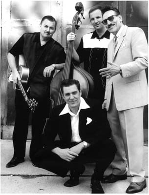

Little Charlie & The Nightcats

Little Charlie & the Nightcats - дети Сакраменто, асы во всем, что касается блюза и свинга. Их творчество построено на контрастах между заявленной серьезностью искусства и противоречивостью музыкального видения. Их музыка одновременно технически совершенна, и человечна, пронизана филигранным юмором.
Прошло 30 лет с тех пор, как гитарист мирового уровня Малыш Чарли Бейти (Little Charlie Baty) и вокалист, гармонист и композитор Рик Эстрин (Rick Estrin) впервые объединили свои усилия и взялись за создание гремучей смеси из свинга, джаза, тяжелого чикагского блюза, рокабилли и бибопа, приправленных острой оригинальной подачей Эстрина. Словно извлеченные из античного рога соло Эстрина на гармонике и пророческо-мудрый вокал превосходно смешиваются со взрывной манерой игры на гитаре Бейти, что позволило группе завоевать всемирное признание.
«Бесспорно впечатляет» - восторгается Associated Press.
«Необыкновенно воодушевляет и превосходно сыграно» - соглашается San Francisco Examiner.
И не вздумайте ошибиться - Little Charlie & the Nightcats вовсе не новички на сцене и не явление одного дня, помешанные на воссоздании классических песен, уже доведенных до совершенства. Они новаторы! Их всеобъемлющее мастерство в исконной американской музыке от чикагского блюза до техасского свинга, от прото-рок-н-ролла и бибопа до скачущего джива - все основано на зубодробительной гитарной акробатике Бейти и приведено в действие выигрышными и неповторимыми композициями Эстрина, резким вокалом и трубным звуком гармоники.
Little Charlie & the Nightcats - бесценный экспонат в череде блюзовых исполнителей. Их пути исходят от классической блюзовой школы. По словам Бейти: «Наша философия заключается в том, что мы должны развлекать людей при помощи музыки. Музыка может существовать и сама по себе, но с помощью нашей энергетики и элементов шоу, она попадает на другой уровень. Мы хотим, чтобы люди понимали, как нам самим нравится то, что мы делаем».
Судя по всему, на последнем альбоме «That's Big!» группа вполне довольна всем происходящим. Little Charlie & the Nightcats создают массивный купол из стилей и разнообразных звуков, скрепленный оригинальной музыкальной подачей и своей точкой зрения на все происходящее. При этом они показывают свои коронные техники повтор фраз, «язык за щекой», и в то же время воспроизводят особую изобретательность, несколько более серьезную, чем была использована в прошлых альбомах. «I Know She Used To Be Your Woman» вполне могла бы стать песней Sonny Boy Williamson II, «Money Must Think I'm Dead» могла бы принадлежать Louis Jordan, а «That's Big» могла быть записана и Coasters. Но нет, все это оригиналы Рика Эстрина! Вы не найдете ничего сопоставимого с инструментальными композициями Литтл Чарли, который, если верить Эстрину, самый талантливый паренек из всех, кого он когда либо встречал. Кроме того, музыкант от Alligator recording Расти Зинн принимает участие в двух из четырнадцати альбомных треков.
С каждым новым релизом Little Charlie & the Nightcats, все отчетливее проглядывает мысль, что не только Ночные коты - великие музыканты, но и беспрецедентный сочинительский талант Рика Эстина играет важную роль. Его песни постоянно сравнивают с Willie Dixon и командой Leiber and Stoller.
Эстрин завоевал награду W.C. Handy в 1993 году за песню My Next Ex-Wife, и принялся писать шедевры для знаменитых исполнителей, входящих в армию его многочисленных поклонников. Благодаря песням Эстрина, целые альбомы были номинированы на Грэмми: «Don't Put Your Hands On Me» (с альбома Коко Тэйлор «Force Of Nature»), «I'm Just Lucky That Way» (с альбома Роберта Крэя «Shame» + «A Sin»), и «Homely Girl» (с альбома Джона Хэммонда «Trouble No More» совместно с Little Charlie & the Nightcats на заднем плане). Хэммонд уговорил Little Charlie & the Nightcats подыграть ему и на следующем релизе, и взял с собой в тур, где они делили сцену с Робертом Крэем и The Allman Brothers Band. Среди артистов, которые делали кавер версии песен Эстрина, числятся также Little Milton, Rusty Zinn, Kid Ramos и Mark Hummel.
Эстрин признается, что сочинение песен - это выражение особой формы искусства: «Я предпочитаю те песни, в которых все сделано на высоком уровне, и в то же время которые несут в себе смысл, рассказывают какую-то историю».
Помимо Dixon и Leiber and Stoller к своим музыкальным влиянием Эстрин причисляет Sonny Boy Williamson II, Percy Mayfield и Baby Boy Warren.
«Рик Эстрин поет и пишет песни как мудрейший из всех обитателей страны блюза, а в гармонику он дует так, словно учился на коленях у самого Little Walter!" - восторгается авторитетное издание Down Beat. «Эстрин - предвестник гениальности в гармонике, и в то же время он лучший из композиторов» - отмечает San Francisco Bay Guardian.
Творчество Эстрина опирается на уникальное мастерство и дикую до невозможности гитарную манеру игры Бейти. Литтл Чарли освоил все: от джаза Charlie Christian до чикагского блюза, от west-coast свинга до рокабилли. В его уникальный гитарный саунд вливаются различные оттенки стилей. Guitar World заявляет, что «Манера игры на гитаре Бейти строится на протяжных соло, балансирующих на гребне волны и точке разрыва, где одна неверная нота способна разрушить всю гармонию». Village Voice отмечает, что «Игра Бейти напоминает Эрика Клэптона и Гая одновременно. Он один из самых влиятельных гитаристов в этом жанре».
Бейти впервые встретился с Эстрином в начале 70-х, в то время Бейти был студентом в UC Berkley и поигрывал на гармонике. Рик Эстрин же владел гармоникой в совершенстве, и Бейти ничего не оставалось, как переключиться на гитару.
После передислокации в Сакраменто, стало очевидно, что Бейти - один на тысячу музыкантов, в равной степени владеющий техниками свинга, джаза, блюза и любыми, доступными воображению, вариациями. Эта парочка сформировала блюз-бенд и карьера началась. С приходом ударника - Джея Хансена и басиста Лоренцо Фаррелла, оба - ветераны некогда известных Bay Area's Steve Lucky and the Rhumba Bums - Little Charlie & the Nightcats были окончательно сформированы.
В 1986 году одна из демо-записей попала на авторитетный блюзовый лейбл Alligator Records. Сам президент Alligator Records Брюс Иглоер был впечатлен, лично отправился в Сакраменто, чтобы посмотреть на живое выступление группы, и попал под дикое очарование Ночных Котов. Спустя некоторое время группа уже выступала не в маленьких блюзовых клубах Сакраменто, а давала концерты и участвовала в фестивалях по всей стране и даже по всему миру.
Последующие альбомы группы: 1988 Disturbing The Peace, 1989 The Big Break! 1991 Captured Live, 1992 Night Vision, 1995 Straight Up! и 1998 Shadow Of The Blues, все выпущенные на Alligator Records, утвердили репутацию как одной из самых рискованных и мудрых блюзовых команд. Альбом 2002 года That's Big! продолжает успех, а отзывы и восторженные рецензии в прессе, от The Chicago Tribune, The New York Post, The Washington Post, The Houston Chronicle, GuitarOne, Guitar Player до локальных СМИ, делают Котов достоянием общественности.
Гитаристы, гармошечники, композиторы, фанаты и критики - все поражены! «Если на свете гитарист лучше, чем Литтл Чарли?» - вопрошает Blues Revue -«Кто может переиграть Рика Эстрина? Little Charlie & the Nightcats играют сложнейшую разновидность когда либо созданного джаза».
Little Charlie & the Nightcats каждый год рассекают по миру с сотнями живым выступлений, включая главные блюзовые фестивали в Чикаго, Сан-Франциско, Цинцинатти, Нью-Йорке и Портланде. Они играли на Монреальском джазовом фестивале, в Сан Диего на San Diego Street Scene и Сиэттловском Bumbershoot Festival.
«Мы хорошо подходим для фестивалей, - хвастается Эстрин, - «людям не интересно то, что не отличается от обычной жизни. Им хочется чего-то особенного! Я косяком ходил - так хотел попасть в шоу-бизнес, и когда вы приходите к нам, то получаете настоящее шоу!»
С их непрекращающимися турне, группа, также, как и их музыка, находится в постоянном движении, привлекая новых поклонников по всему миру. «Блюз нуждается в преобразовании» - замечает The Village Voice, - «а Little Charlie & the Nightcats вербуют десятки новых рекрутов блюза каждую ночь!»
«Мощно: потрясающе: великолепно: Несомненно, единогласно общепризнанная манера игры на гитаре Бейти и уникальное ироничное видение делают Little Charlie & the Nightcats одной из самых успешных команд в жанре блюз-рок-свинг-джазового синтеза, так востребованного сегодня!» - Living Blues.